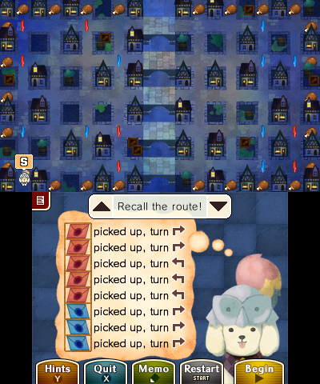
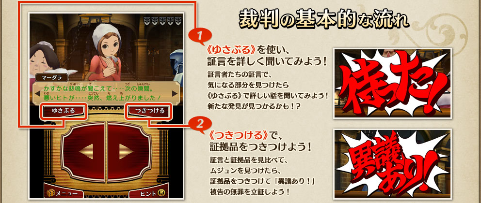

Professor Layton vs. Phoenix Wright: Ace Attorney
Professor Layton vs. Phoenix Wright: Ace Attorney is the latest stop on my journey to play through all of the Ace Attorney games in Japanese. The latest and by far the greatest! But I should mention its immediate predecessor first to give a bit more context.
Ace Attorney Investigations: Miles Edgeworth 2, game number 6, has been a bit of a slog to go through towards the end. It still features a brilliant cast of characters entangled in an overarching story spanning several cases, but at that point I was getting a bit tired of the tried and true formula. Even the best dish loses its appeal when you eat it every single day! I clearly needed a break from the courtroom.
Then Mass Effect Legendary Edition came out, and I jumped at the chance to see what the fuss was about††Was is the right word here - the 3rd part came out more than 9 years ago!. Briefly, ME1 was interesting enough to go through, more than anything else, sort of like being on a journey of archeological discovery: "Aha, so this is how the series started out". The second installment really pushed the production values over the top, and felt like several mini sci-fi movies stitched together. Overall - great stuff, even if I did dislike some of the more prominent militaristic overtones. I got tired of the ME shenanigans at the first hours of the 3rd game, though, and cannot say much about it other than going Vanguard has been way more fun than Adept or Soldier. Back to Ace Attorney, then.
Professor Layton vs. Phoenix Wright: Ace Attorney came out only 2 short years after Ace Attorney Investigations: Miles Edgeworth 2, but the difference is not unlike the one between ME1 and ME2. Other then going full gorgeous 3D††I have been a bit apprehensive about this, as often 2D->3D transitions lose some of the expressiveness that comes with per-frame animation, but it turned out there was nothing to worry about - the 3D characters are as expressive as ever, and the new dimension of the in-game environments has been used to a great dramatic effect. and having voiced characters, it made several breakthrough modifications to the AA formula: fully animated cutscenes (that also support stereoscopic 3D!), multi-person testimonies and of course Layton-style puzzles, in effect 60+ minigames. The story is self-contained and, in a word, wonderful. Like the characters themselves comment at the end, their journey "was like reading a long book". It really took the series to the next level for me, and I am very happy to have learned from this video that
- The Great Ace Attorney games takes a lot of inspiration from it, e.g. multi-person testimonies
- Professor Layton was directly inspired by the AA series, and that alone makes it worth checking out, meaning I have even more games to play now
What's the big deal with multi-person testimonies, though? Well, they add another dimension to the already captivating process of cross-examination, namely - interaction between the witnesses. Not only do they bicker and banter with each other, but offer an additional source of story-advancing contradictions. It is a real gem of an idea, even if it is taken to a somewhat absurd level at times - there is a testimony given by 10 people at once! Still, it works really well, and adds even more thrill to the court proceedings.
I found puzzles that crossed over from the Professor Layton series to be varied, entertaining and fair. It helps that they are also connected thematically with the world. In the course of exploration, players are rewarded with coins that can be spent on hints, so even the toughest of the puzzles can be conquered by just about anyone. Best part is - hints can be used during the trial phase as well, which offers a freedom of adjusting one's playstyle on the fly. Sometimes I was just not in the mood for contemplation, and wanted to know what happens next - hints offered me a way forward without having to look up walkthroughs.
Playing in Japanese
The setting of the game leads itself to some pretty obscure vocabulary, and boy was I happy to discover that absolutely all in-game text has furigana. This means looking up new words an order of magnitude easier and often even unnecessary, as many "new" words were, in fact, old pals written in unfamiliar kanji.
Conclusion
If you like adventure games/visual novels and are not averse to a bit of puzzling, Professor Layton vs. Phoenix Wright: Ace Attorney is a must. For the first time in the series, the game does not end after finishing the main story, as there are DLCs to play through.
References
https://www.layton-vs-gyakuten.jp/
https://www.igdb.com/games/professor-layton-vs-phoenix-wright-ace-attorney/presskit